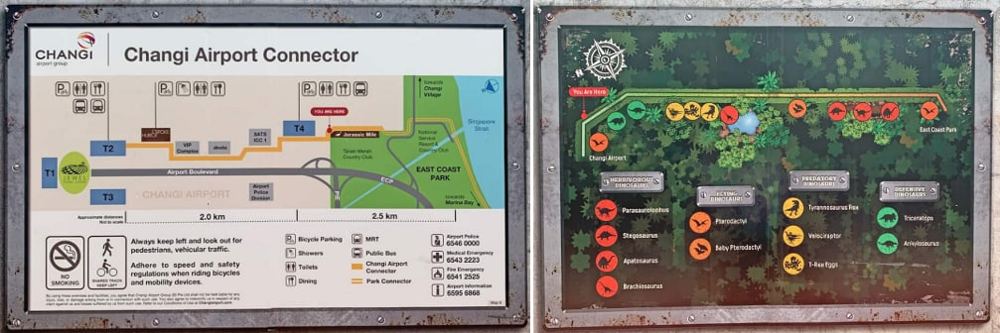

Visitors who want to cycle from Changi Airport towards East Coast Park and enjoy the sights along the way can rent bicycles from GoCycling at HUB & SPOKE and return them at any of the seven other GoCycling outlets across Singapore. Carrying a wide array of bicycles including tandem and children’s bicycles, this GoCycling branch also sells bicycle equipment and offers bike repair services.
You can even park the rented bicycles at the locker pods located outside Terminal 2 if you want to take shelter from the hot sun!
Visit GoCycling.sg for more details.
Nestled at HUB & SPOKE, HUB & SPOKE Café serves up local and western dishes in a colonial-themed setting, with the option of outdoor alfresco dining where diners can enjoy their meal under a canopy. Apart from classic breakfast options ranging from eggs benedict to kaya toasts, the cafe also serves familiar favourites such as pastas and sandwiches, and laksa and nasi lemak as mains. Those looking for a sweet treat or just to chillax can choose from a range of bubble teas, milk teas, as well as alcohol, on top of a wide range of local cold and hot drinks.
Click here to see the menu!
An open-air event space on the lawn just outside the glass house café serves as a quaint venue for cosy gatherings and events. For event space enquiries, please contact us at hubspokecafe@gmail.com
Take a scenic 2km walk to Jurassic Mile from HUB & SPOKE by foot or cycle (rent a bicycle from GOCycling).
You may also cycle in from East Coast Park via the Changi Coastal Park Connector.

Alternatively, for direct access to Jurassic Mile:
| By public transport | By private transport |
|---|---|
| You may drop off at Terminal 4 bus stop and follow the signs to Jurassic Mile. |
60 Airport Boulevard #01-T2S-02, Singapore Changi Airport (S)819643 |